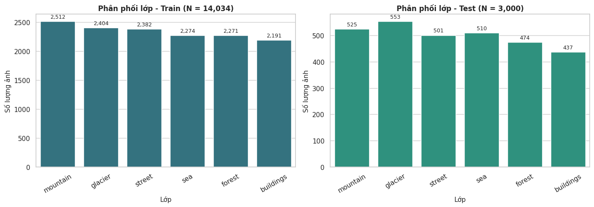
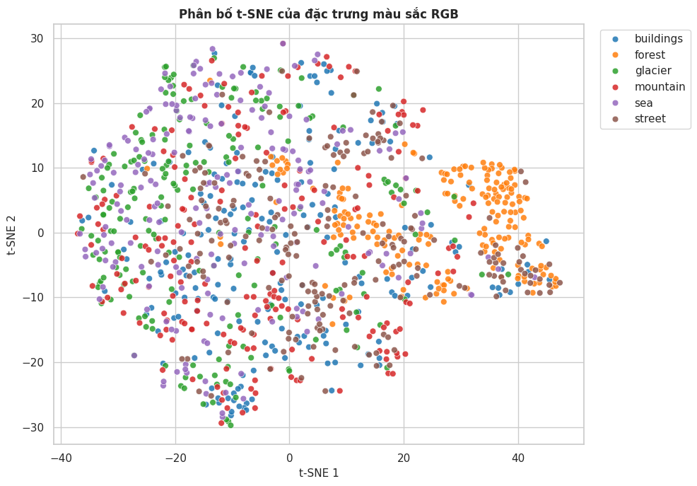
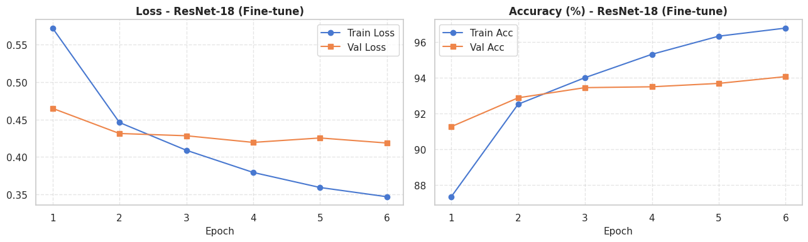
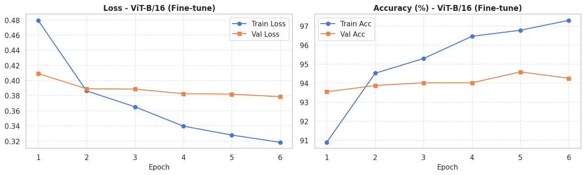
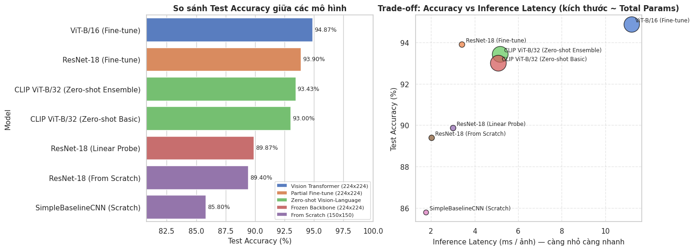
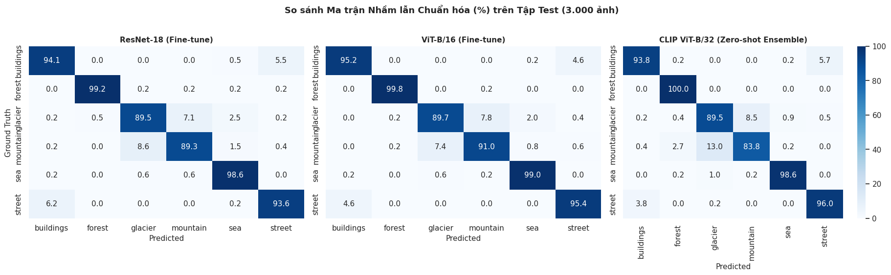
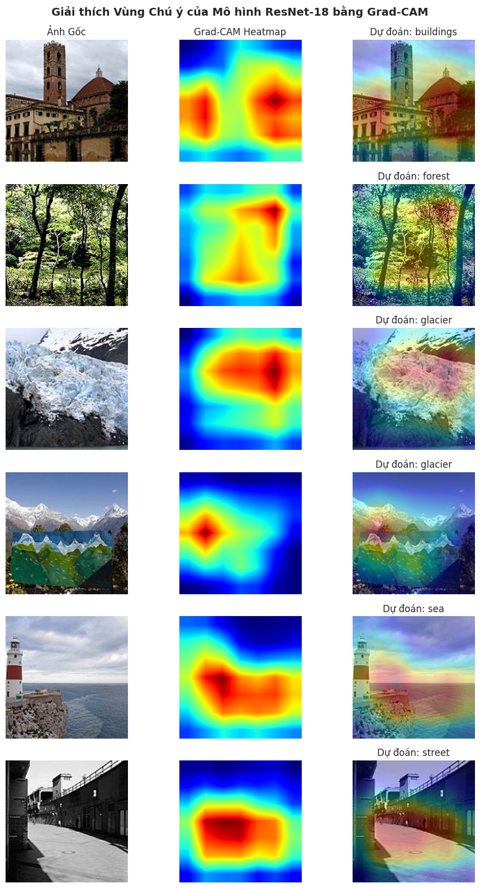

Intel Image Classification
Đối chiếu có kiểm soát 7 cấu hình phân loại ảnh cảnh quan qua 4 trục: Huấn luyện từ đầu, Linear Probe, Fine-tuning (ResNet-18, ViT-B/16), Zero-shot CLIP và giải thích vùng chú ý bằng Grad-CAM.
01. Tổng quan bài toán & Chỉ số chính
Computer Vision
Thực nghiệm giải quyết bài toán phân loại 6 lớp cảnh quan trên 17.034 ảnh màu RGB (tách Stratified Split từ seg_train thành 11.928 ảnh Train / 2.106 ảnh Validation, giữ nguyên 3.000 ảnh seg_test độc lập). Toàn bộ mô hình có giám sát dùng CrossEntropyLoss(label_smoothing=0.05), tối ưu bằng AdamW + CosineAnnealingLR và được đánh giá đồng thời cả độ chính xác lẫn chi phí triển khai (VRAM, độ trễ suy luận ms/ảnh).
02. Tập dữ liệu & 6 Lớp cảnh quan
14.034 Train / 3.000 Test
Kiểm tra toàn vẹn ghi nhận 0 tệp lỗi, 100% ảnh ở hệ 3 kênh RGB, với 48 ảnh Train (0,34%) và 7 ảnh Test (0,23%) có chiều cao khác chuẩn 150×150 px được chuẩn hóa khi vào pipeline (150×150 cho mô hình Scratch; 224×224 chuẩn ImageNet cho mô hình Pretrained).
03. 4 Trục đối chiếu thực nghiệm
PyTorch · Tesla T4From Scratch (150×150, chuẩn hóa theo Train)
SimpleBaselineCNN (0,42M tham số, 10 epochs) đối chiếu với ResNet-18 (11,18M tham số, 12 epochs) học hoàn toàn từ đầu.
Linear Probe vs Partial Fine-tuning (ResNet-18, 224×224)
Đóng băng backbone chỉ train tầng fc (3.078 tham số, 5 epochs) so với mở khóa layer4+fc bằng Differential LR (1e-4 / 1e-3, 6 epochs).
CNN vs Vision Transformer (ViT-B/16)
Mở khóa 2 khối Encoder cuối và đầu phân loại của ViT-B/16 (14,18M tham số cập nhật / 85,80M tổng, 6 epochs) để đánh giá cơ chế Self-Attention.
Zero-shot CLIP (ViT-B/32) & Grad-CAM XAI
Thử nghiệm phân loại không huấn luyện qua Basic Prompt vs Prompt Ensemble (5 mẫu câu) và trực quan hóa vùng chú ý trên layer4[-1] bằng Grad-CAM.
04. Khám phá đặc trưng & Động học huấn luyện
EDA & CurvesPhép chiếu t-SNE trên đặc trưng màu RGB cho thấy forest tách biệt rõ, trong khi mountain–glacier và buildings–street chồng lấn nặng. Trên đường cong huấn luyện, các mô hình pretrained hội tụ ngay từ epoch đầu tiên (ResNet-18 FT đạt 94,06% Val Acc ở epoch 6; ViT-B/16 đạt đỉnh 94,59% ở epoch 5).




05. Bảng Benchmark 7 mô hình, Phân tích lỗi & Grad-CAM
Test 3.000 ảnh| Mô hình | Hệ quy chiếu | Trainable | Train (s) | VRAM (MB) | Latency (ms) | Test Acc (%) | Macro-F1 (%) |
|---|---|---|---|---|---|---|---|
| ViT-B/16 (Fine-tune) | Vision Transformer | 14,18M | 1.262,8 | 2.276,6 | 11,20 | 94,87 | 94,98 |
| ResNet-18 (Fine-tune) | Partial Fine-tune | 8,40M | 439,2 | 753,4 | 3,42 | 93,90 | 93,99 |
| CLIP ViT-B/32 (Ensemble) | Zero-shot VLM | 0 | 0,0 | 1.441,4 | 5,17 | 93,43 | 93,58 |
| CLIP ViT-B/32 (Basic) | Zero-shot VLM | 0 | 0,0 | 1.441,4 | 5,08 | 93,00 | 93,10 |
| ResNet-18 (Linear Probe) | Frozen Backbone | 3.078 | 391,7 | 606,9 | 3,00 | 89,87 | 90,02 |
| ResNet-18 (Scratch) | From Scratch | 11,18M | 577,9 | 909,3 | 2,02 | 89,40 | 89,50 |
| SimpleBaselineCNN | From Scratch | 0,42M | 458,3 | 1.048,2 | 1,76 | 85,80 | 85,87 |


